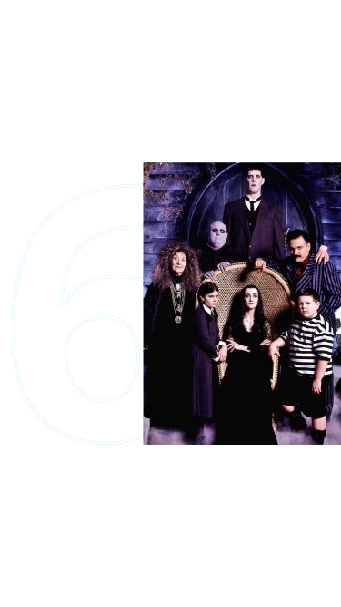
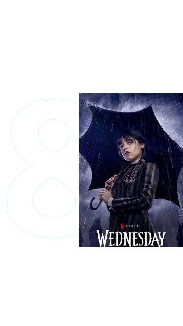

Seu navegador não suporta a tag de vídeo.
A Família
Addams
★ ★ ★ ★ ★
1964 | 1h 39m
Assistir Agora
Voltar ao início
Família Addams 1938
Família Addams 1964
Halloween com a Família Addams
Família Addams 1991
Valores da Família Addams

Família Addams 1998
Família Addams 2019

Wandinha